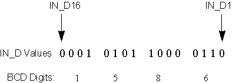

Boolean Fan Input function block execution
The number of inputs to the Boolean Fan Input function block is an extensible parameter. The block default is two inputs. You add inputs by right-clicking the function block diagram, clicking Extensible Parameters, and then modifying the number of inputs. This creates additional input connectors for the block.
The Boolean Fan Input function block examines the discrete input values for the Set state at each block execution. The OUT_INT output is set to the binary weighted value of the discrete inputs (IN_D1 is weighted as 1, IN_D2 as 2, IN_D3 as 4, IN_D4 as 8, and so on). The status of OUT_INT is set to the worst status among the inputs.
When OUT_INT transitions from zero to non-zero and ARM_TRAP is non-zero, FIRST_OUT traps the value of OUT_INT by copying it to FIRST_OUT. FIRST_OUT retains its value until the IN_Dn parameters transition to zero, then to one or more non-zero (and while ARM_TRAP is non-zero). Setting RESET_IN to a non-zero value sets FIRST_OUT to zero. After a reset, FIRST_OUT remains zero until all IN_Dn paramters transition to zero, then to one or more non-zero. The status of FIRST_OUT is equal to the status of OUT_INT when the trap occurred.
The value of the OUT_D output is the logical OR of the discrete inputs. Its status is equal to the worst status among the inputs.
To support thumbwheel switch interfaces, the Boolean Fan Input function block uses a contained parameter to store the binary coded decimal (BCD) representation of the discrete inputs. The first four discrete inputs are used to construct the BCD ones digit. (Within this nibble, the first input is the least-significant bit.) The next four inputs are used for the BCD tens, hundreds, thousands, and ten thousands digits. When the four bits representing a digit are greater than nine, the digit is limited to nine.
The following figure is an example of Boolean Fan Input function block execution for OUT_INT = 5510. The result is BCD = 1586 and OUT_D = True.
